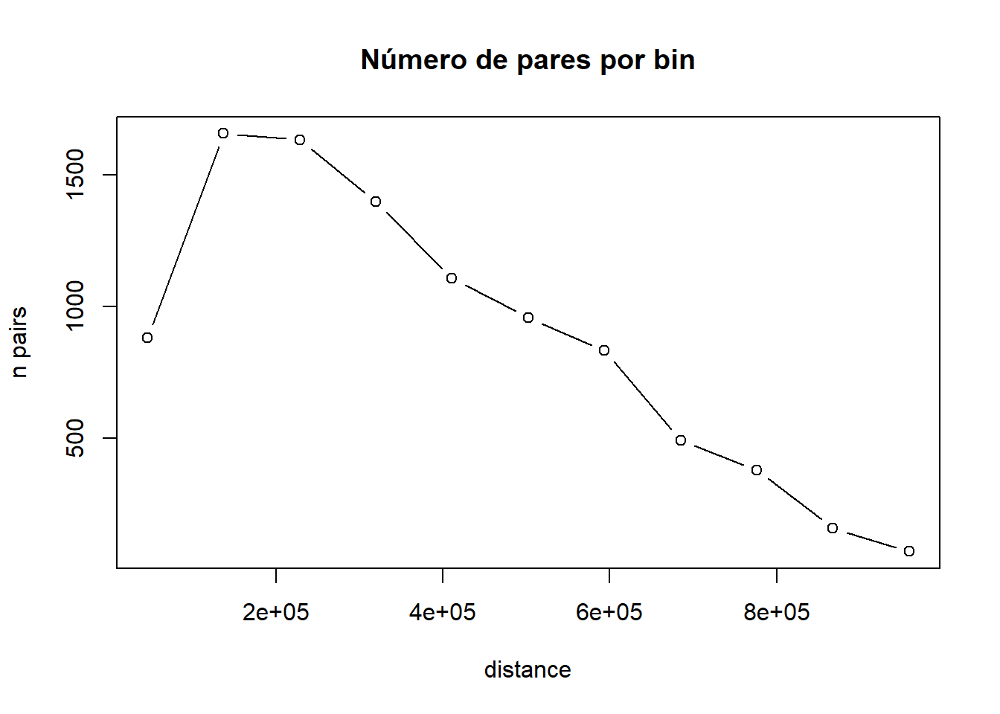

Análisis geoestadístico del ozono y la temperatura en California durante marzo de 2024
Autores/as
Afiliación
Luna Katerin Díaz Casallas
Departamento de Estadística - Universidad Nacional de Colombia
Camilo Alejandro Raba Gómez
Fecha de publicación
21 de octubre de 2025
1 Introducción
La calidad del aire es un factor clave para la salud pública, el bienestar social y la sostenibilidad ambiental, y California se destaca como uno de los estados más afectados de Estados Unidos por la contaminación atmosférica. La combinación de una alta densidad poblacional, una intensa actividad industrial y vehicular, junto con fenómenos naturales como los incendios forestales, ha hecho que varias de sus ciudades se ubiquen entre las más contaminadas del país. Al mismo tiempo, la temperatura cumple un papel fundamental en la dinámica atmosférica, ya que influye en la dispersión, concentración y formación de contaminantes, además de constituir en sí misma un aspecto crítico para comprender las condiciones ambientales regionales. Frente a este contexto, resulta necesario llevar a cabo un análisis geoespacial que considere tanto la calidad del aire como la temperatura en California, con el fin de identificar patrones espaciales, contrastes regionales y áreas críticas que permitan orientar acciones de mitigación y gestión ambiental.
2 Descripción
Los datos objeto de este estudio provienen de la Agencia de Protección Ambiental (EPA) de los Estados Unidos y corresponden a registros horarios obtenidos de las estaciones de monitoreo durante el mes de marzo de 2024. En partícular, se analizan las variables Temperatura y Ozono (O_3).
2.1 Unidades
Temperatura: Medido en grados celsius (C°) con una intensidad horaria.
Ozono: Medido en partes por billón (ppb) con una intensidad horaria.
Se tomaron los datos de Temperatura de la madrugada el primero de marzo de 2024:
Ver código
EstacionesOz <- data %>%filter(AQSID %in%colnames(Ozone_Matrix)[-1])EstacionesOz <- EstacionesOz[,c(1:10,13)]est_sf_Oz <-st_as_sf(EstacionesOz, coords =c("Longitude", "Latitude"), crs =4326)est_sf_utm_O <-st_transform(est_sf_Oz, crs =3310)deci_coord_O =SpatialPoints(cbind(EstacionesOz$Longitude, EstacionesOz$Latitude),proj4string =CRS("+proj=longlat"))utm_coord_O =spTransform(deci_coord_O, CRS("EPSG:3310"))utm_coord_df_O =as.data.frame(utm_coord_O)EstacionesOz$x <- utm_coord_df_O$coords.x1EstacionesOz$y <- utm_coord_df_O$coords.x2y_oz <- Ozone_Matrix[1,] #Tomar una fechay_oz <-cbind(colnames(y_oz),t(y_oz[1,]))y_oz <- y_oz[-1,]y_oz <-as.data.frame(y_oz)y_oz <-na.omit(y_oz)y_oz <-inner_join(y_oz, EstacionesOz, by=c("V1"="AQSID"))datosOZ <- y_oz[,c(13,14,2)] #Datos1 es la base con coordenadas + variablecolnames(datosOZ)=c("Este","Norte","Ozono")datosOZ$Ozono <-as.numeric(datosOZ$Ozono)coords_3310O <-st_coordinates(est_sf_utm_O)est_sf_utm_O$Este <- coords_3310O[, "X"]est_sf_utm_O$Norte <- coords_3310O[, "Y"]datosO_sf_utm <-merge(est_sf_utm_O, y_oz[, c("V1", "V2")], by.x ="AQSID", by.y ="V1")datosO_sf_utm$Ozono <-as.numeric(datosO_sf_utm$V2)datosO_sf_wgs84 <-merge(est_sf_Oz, y_oz[, c("V1", "V2")], by.x ="AQSID", by.y ="V1")datosO_sf_wgs84$Ozono <-as.numeric(datosO_sf_wgs84$V2)palO <-colorNumeric(palette ="viridis", domain = datosO_sf_wgs84$Ozono)leaflet() %>%addProviderTiles(providers$CartoDB.Positron) %>%# Contorno de CaliforniaaddPolygons(data = sh_mundos_wgs84, fill =FALSE, color ="black", weight =2) %>%# Puntos de temperaturaaddCircleMarkers(data = datosO_sf_wgs84,fillColor =~palO(Ozono),fillOpacity =0.8,color ="black",weight =1,radius =6,popup =~paste("Ozono:", Ozono, "°C")) %>%addLegend(pal = palO, values = datosO_sf_wgs84$Ozono, title ="Ozono (ppb)")
Ver código
ozone <-as.geodata(datosOZ) summary(ozone)
Number of data points: 139
Coordinates summary
Este Norte
min -276541.1 -598934
max 500861.7 415184
Distance summary
min max
6304.93 1187479.83
Data summary
Min. 1st Qu. Median Mean 3rd Qu. Max.
20.00000 35.00000 38.00000 37.48201 40.50000 53.00000
El gráfico muestra una relación polinomial de la variable Ozono con respecto a las coordenadas en Norte. Se prueba con varios modelos hasta encontrar aquel que mitigue el efecto espacial.
3.1.1 Modelo de tendencia espacial
El modelo que mejor atrapa el efecto de la media es:
A continuación, se presenta la estimación del semivariograma obtenida con la función variog. Se muestran dos gráficos comparativos: el primero corresponde a los datos originales (sin eliminar la tendencia) y el segundo a los residuales obtenidos tras ajustar el modelo de regresión, lo que permite observar el efecto de remover la tendencia en la estructura espacial.
Se observa que la estimación de la semivarianza de la variable incrementos es más estable y presenta valores más bajos al remover la tendencia, lo que indica que en este caso el semivariograma refleja de manera más adecuada la verdadera estructura espacial del fenómeno.
Ver código
plot(vg1_O$u, vg1_O$n, type="b",xlab="distance", ylab="n pairs",main="Número de pares por bin")

3.1.3 Estimación del Modelo Teórico de Semivariograma
En construcción
3.1.4 Kriging
En construcción
3.2 Variable Temperatura
Se tomaron los datos de Temperatura de la madrugada el primero de marzo de 2024:
Ver código
EstacionesT <- data %>%filter(AQSID %in%colnames(Temp_Matrix)[-1])EstacionesT <- EstacionesT[,c(1:10,13)]est_sf_T <-st_as_sf(EstacionesT, coords =c("Longitude", "Latitude"), crs =4326)est_sf_utm_T <-st_transform(est_sf_T, crs =3310)deci_coord_T =SpatialPoints(cbind(EstacionesT$Longitude, EstacionesT$Latitude),proj4string =CRS("+proj=longlat"))utm_coord_T =spTransform(deci_coord_T, CRS("EPSG:3310"))utm_coord_df_T =as.data.frame(utm_coord_T)EstacionesT$x <- utm_coord_df_T$coords.x1EstacionesT$y <- utm_coord_df_T$coords.x2y_T <- Temp_Matrix[1,] #Tomar una fechay_T <-cbind(colnames(y_T),t(y_T[1,]))y_T <- y_T[-1,]y_T <-as.data.frame(y_T)y_T <-na.omit(y_T)y_T <- y_T[-which.min(y_T$V2),]y_T <-inner_join(y_T, EstacionesT, by=c("V1"="AQSID"))datosT <- y_T[,c(13,14,2)] #Datos1 es la base con coordenadas + variablecolnames(datosT)=c("Este","Norte","Temperatura")datosT$Temperatura <-as.numeric(datosT$Temperatura)coords_3310 <-st_coordinates(est_sf_utm_T)est_sf_utm_T$Este <- coords_3310[, "X"]est_sf_utm_T$Norte <- coords_3310[, "Y"]# 4. Crear el objeto final de datos (combinando temperatura con las coordenadas UTM)datosT_sf_utm <-merge(est_sf_utm_T, y_T[, c("V1", "V2")], by.x ="AQSID", by.y ="V1")datosT_sf_utm$Temperatura <-as.numeric(datosT_sf_utm$V2)datosT_sf_wgs84 <-merge(est_sf_T, y_T[, c("V1", "V2")], by.x ="AQSID", by.y ="V1")datosT_sf_wgs84$Temperatura <-as.numeric(datosT_sf_wgs84$V2)pal <-colorNumeric(palette ="viridis", domain = datosT_sf_wgs84$Temperatura)leaflet() %>%addProviderTiles(providers$CartoDB.Positron) %>%# Contorno de CaliforniaaddPolygons(data = sh_mundos_wgs84, fill =FALSE, color ="black", weight =2) %>%# Puntos de temperaturaaddCircleMarkers(data = datosT_sf_wgs84,fillColor =~pal(Temperatura),fillOpacity =0.8,color ="black",weight =1,radius =6,popup =~paste("Temp:", Temperatura, "°C")) %>%addLegend(pal = pal, values = datosT_sf_wgs84$Temperatura, title ="Temperatura (°C)")
Ver código
temp <-as.geodata(datosT) summary(temp)
Number of data points: 122
Coordinates summary
Este Norte
min -325700.9 -580919.1
max 387269.8 281577.0
Distance summary
min max
609.2419 1000171.2033
Data summary
Min. 1st Qu. Median Mean 3rd Qu. Max.
-3.20000 13.15000 15.80000 14.42869 17.20000 24.50000
En el gráfico se observa un agrupamiento en las coordenadas Norte con respecto a los datos, que puede llegar a corregirse con algún polinomio. Se probará con diferentes modelos a ver si se puede llegar a disminuir el efecto espacial.
3.2.1 Modelo de tendencia espacial
El modelo que mejor atrapa el efecto de la media es:
Temperatura = \beta_0 + \beta_1 \times Norte + \beta_2 \times Norte^2
Ver código
fitT <-lm(Temperatura~Norte+I(Norte^2), data = datosT) summary(fitT)
Call:
lm(formula = Temperatura ~ Norte + I(Norte^2), data = datosT)
Residuals:
Min 1Q Median 3Q Max
-18.3668 -1.1159 0.9092 2.1923 9.2782
Coefficients:
Estimate Std. Error t value Pr(>|t|)
(Intercept) 1.326e+01 5.352e-01 24.766 < 2e-16 ***
Norte -2.229e-05 3.230e-06 -6.901 2.68e-10 ***
I(Norte^2) -3.754e-11 8.551e-12 -4.390 2.47e-05 ***
---
Signif. codes: 0 '***' 0.001 '**' 0.01 '*' 0.05 '.' 0.1 ' ' 1
Residual standard error: 4.049 on 119 degrees of freedom
Multiple R-squared: 0.3199, Adjusted R-squared: 0.3084
F-statistic: 27.98 on 2 and 119 DF, p-value: 1.094e-10
Observamos el comportamiento de sus residuales podemos notar que el modelo ayudo a reducir el efecto espacial.
p¿Presentamos la estimación del semivariograma obtenida mediante la función variog para la variable temperatura. Se comparan los resultados al calcularlo directamente sobre los datos originales (sin remover la tendencia) y al utilizar los residuales de un modelo de regresión, con el objetivo de analizar cómo influye la presencia de tendencia en la estructura espacial.
Cuando no se remueve la tendencia, la semivarianza alcanza valores más altos y presenta una forma aparentemente más regular, aunque dicha regularidad está influenciada por la tendencia global de los datos. En cambio, al eliminar la tendencia, los valores de semivarianza disminuyen y el patrón pierde suavidad, pero el variograma refleja con mayor fidelidad la verdadera dependencia espacial.
Ver código
plot(vg1_T$u, vg1_T$n, type="b",xlab="distance", ylab="n pairs",main="Número de pares por bin")
En este caso, el último punto corresponde a menos de 25 pares de observaciones, por lo que su interpretación resulta menos confiable.
3.2.3 Estimación del Modelo Teórico de Semivariograma
El modelo con menor MSE es el modelo Gausiano. Sin embargo, dada la inestabilidad numérica que se observa al realizar la predicción se opta por usar el modelo esférico obtenido por mínimos cuadrados ponderados usando la ponderación 1/n, que es el segundo mejor en términos del MSE.
3.2.4 Kriging
Ver código
best_model_T <- gstat::vgm(psill = res_es_T$`1/n`$Optimizados[2],model ="Sph",range = res_es_T$`1/n`$Optimizados[3],nugget = res_es_T$`1/n`$Optimizados[1])sh_mundos_utm <-st_transform(sh_mundos, crs =CRS("EPSG:3310"))new <- sp::spsample(as(sh_mundos_utm, "Spatial"), n =50000, type ="regular")proj4string(new) <-CRS("EPSG:3310")coordinates(new) ~ Este + Norte